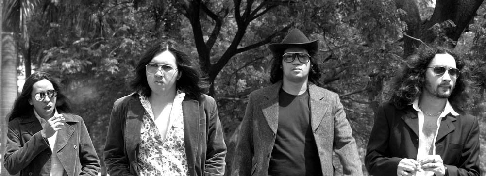
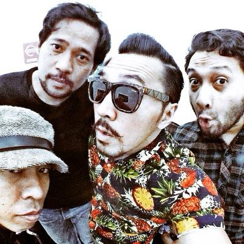

|
NAIF KLASIK (1995 - 2003)

Berawal pada sebuah kampus seni di Jakarta, tepatnya di Cikini Raya 73, kampus Institut Kesenian Jakarta (IKJ), NAIF terbentuk.
Beberapa orang mahasiswa tingkat satu dari kelas pendidikan dasar seni rupa kerap kali menginap di rumah teman mereka secara bergiliran.
Tujuan awal hanyalah untuk mengerjakan tugas kuliah bersama. Tapi yang terjadi mereka seringkali malah nongkrong sambil bernyanyi-nyanyi dan
bermain gitar semalam suntuk, sampai terkadang malah lupa mengerjakan tugas karena tertidur. Siapa sangka semua itu akan menjadi sebuah awal karir mereka
di dunia musik. Suatu saat di pertengahan tahun 1995, David, Pepeng dan Jarwo bermalam di rumah seorang teman yang bernama
Shendi Adam (bassist Rumahsakit – asal IKJ). Seperti biasa, awalnya hanya untuk mengerjakan tugas kuliah, namun yang terjadi – seperti yang telah disebutkan tadi –
mereka malah bernyanyi dan bermain gitar semalaman. Di malam itu pula mereka tiba-tiba membuat sebuah lagu,
terinspirasi dari sebuah konser akustik Nirvana yang mereka saksikan di MTV sebelumnya. Lagu tersebut akhirnya mereka beri judul “Jauh” (NAIF, Debut Album).
Pada saat berikutnya keisengan mereka ternyata berkembang dengan seringnya mereka menyewa studio latihan band dan menyanyikan lagu-lagu karya mereka sebagai sisipan.
Di saat inilah formasi mengalami pergantian, hanya tiga orang saja yang dari awal bertahan, yaitu Jarwo, David dan Pepeng. Hingga suatu saat
Chandra datang mengisi kekosongan, disusul Emil. Mereka berlima masing-masing memang memiliki jam terbang sebagai anak band.
Bahkan sebelum formasi ini terbentuk mereka secara terpisah pernah berkolaborasi pula.
Seperti contohnya David pernah tergabung dalam satu band bersama Emil tanpa Jarwo dan lainnya. Dan selanjutnya seperti ditukar-tukar saja.
" Yang ku tahu pasti ku benci untuk mencintaimu "
Naif - Benci Untuk Mencinta
Dengan posisi David pada vokal, Jarwo pada gitar, Chandra pada keyboard, Emil pada bass dan Pepeng pada drum, NAIF mulai aktif mengisi acara-acara kampus IKJ.
Lagu-lagu ciptaan sendiri lainnya pun menyusul, seperti “Benci Libur”, “Piknik ‘72”, dan lain-lain.
Sedangkan nama NAIF didapat dari seorang teman yang bernama Dodot, yang menilai lagu-lagu mereka terdengar begitu sederhana,
namun tetap berisi dan terdengar harmonis. Selain itu, kata “NAIF” pun mudah diingat.
Suatu saat di tahun 1996, NAIF mendapat kabar dari Irwan Ahmett, seorang teman – disainer grafis, bahwa sebuah perusahaan rekaman berlabel Bulletin Records
(PT. Indosemar Sakti) berencana akan merilis sebuah album kompilasi.
Karena tertarik akan proyek tersebut maka NAIF menawarkan demo kaset yang telah mereka buat sebelumnya kepada perusahaan rekaman tersebut.
Tanpa diduga ternyata sang produser tak memasukkan NAIF dalam proyek kompilasi tersebut, tapi justru berniat membuatkan album rekaman sendiri untuk NAIF.
Tentu saja NAIF sangat gembira. Setelah melalui berbagai prosedur tertentu, NAIF akhirnya masuk studio rekaman dan berhasil menelurkan debut album NAIF dengan
“Mobil Balap” sebagai tembang jagoannya.

NAIF tak pernah mengklaim diri bahwa mereka adalah band dengan aliran ini atau itu. Terserah apa kata penikmat musik mereka tentang jenis musik yang mereka usung.
NAIF anti mengkotak-kotakkan jenis musik. Misi NAIF adalah menawarkan alternatif warna musik yang berbeda dari yang ada adalam industri mainstream di Indonesia.
Yang pasti tetap berusaha jujur dala berkarya.
Retro. Banyak yang mengklasifikasikan musik NAIF sebagai musik retro. Itu karena kebetulan Emil, David, Jarwo, Pepeng, dan Chandra (pada saat itu)
menyukai musik-musik lama yang kemudian berpengaruh terhadap karya yang mereka buat.
Walau demikian, tak menutup kemungkinan music NAIF akan mengalir dengan tetap mempertahankan ciri mereka, karena bagaimanapun NAIF tetaplah manusia masa kini,
yang hidup dan bersosialisasi di masa kini.
Bukan maksud melucu bila dalam aksi panggung NAIF, David sang vokalis mengeluarkan jurus-jurus saktinya yang kerap membuat penonton terpingkal-pingkal.
Itu memang sudah menjadi sifatnya sehari-hari, yang kemudian ia bawa ke atas panggung sebagai media interaksi terhadap penonton.
Namun tetap, mereka berlima serius dalam berkarya. Hanya saja, menurut mereka, konsep musik dan hiburan yang mereka tawarkan
di setiap penampilan NAIF masih tergolong beda dari semua yang ada di Indonesia, sehingga mereka sering dianggap lucu atau unik.
Intinya, mereka juga ingin menunjukkan, bahwa di balik segala hal dalam musik NAIF terdapat suatu usaha yang serius untuk menghasilkan sebuah karya yang idealis.
Idealis ala NAIF.
NAIF SEKARANG (2003 - KINI)
Tahun 2003… Setelah sewindu penuh NAIF berkiprah di entertainment, Chandra memutuskan untuk mengundurkan diri dari band.
Chandra memiliki alasan sendiri atas keputusannya. Ia ingin meneruskan karirnya di dunia yang sesuai dengan pendidikan akademisnya, disain grafis.
Hal ini tentu sempat membuat keempat rekannya kecewa. Namun itu tak berlangsung lama. Kini NAIF resmi berempat : Emil, David, Jarwo dan Pepeng.
Mereka bertekad untuk tetap meneruskan pergelutan mereka di blantika musik Indonesia dengan keNAIFan mereka. NAIF dengan formasi baru! Semangat baru!
|